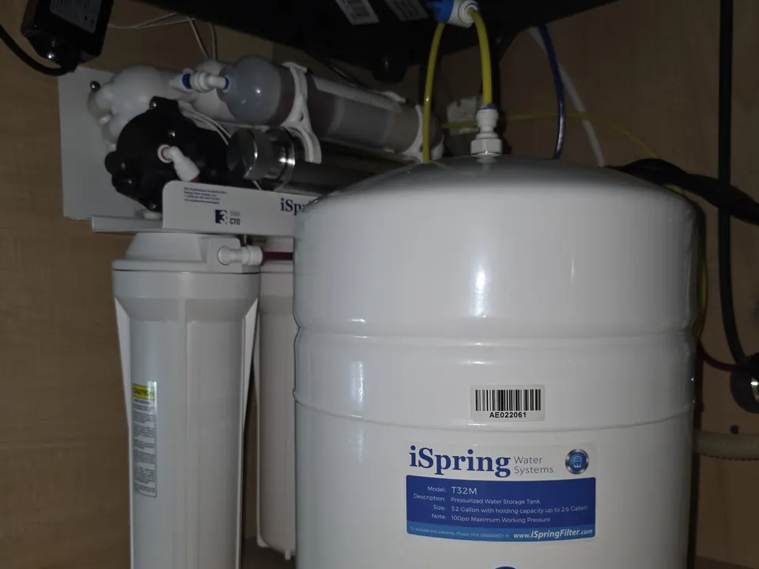

If you are dealing with hard water, unpleasant taste, odor, sediment, or concerns about the quality of your drinking water, our team can help you find the right filtration solution for your household. From under-sink filters to whole-home systems, Angle Stop Plumbing delivers dependable service, honest recommendations, and quality installation.
Schedule Water Filtration Services Today!
Professional Water Filtration Services for Your Home
Your home’s water should be clean, clear, and reliable. When water contains excess sediment, chlorine, minerals, or other impurities, it can affect everything from taste and smell to appliance performance and plumbing efficiency. At Angle Stop Plumbing, we provide water filtration services designed to improve the quality of your home’s water supply.

Our water filtration services may include:
- Whole-house water filtration system installation
- Under-sink water filter installation
- Drinking water filtration systems
- Water filter replacement
- Water filtration system repair
- Sediment filter installation
- Carbon filtration systems
- Reverse osmosis system installation
- Water quality improvement solutions
- Residential water treatment system service
We help homeowners choose practical filtration options based on their water concerns, household needs, and long-term goals.
Benefits of Water Filtration
A professionally installed water filtration system can improve both water quality and everyday comfort in your home. Depending on the system you choose, water filtration may help:
- Reduce sediment, chlorine, and other common impurities
- Improve the taste and smell of drinking water
- Support cleaner water for cooking and food preparation
- Help protect plumbing fixtures and appliances
- Reduce buildup caused by minerals and contaminants
- Provide cleaner water from multiple taps throughout the home
- Increase confidence in your household water quality
The right solution depends on the specific issues you want to address, which is why professional guidance matters.
Water Filtration Systems We Install and Service
At Angle Stop Plumbing, we provide a range of residential water filtration services to meet different water quality needs.
Whole-House Water Filtration Systems
A whole-home filtration system treats water as it enters your house, helping improve water quality at sinks, showers, tubs, and appliances. This can be a great option for homeowners who want cleaner water throughout the entire property.

Under-Sink Water Filters
Under-sink filtration systems are installed at a specific fixture, often in the kitchen, to improve the quality of drinking and cooking water. These systems are a practical choice for targeted filtration where it matters most.
Reverse Osmosis Systems
Reverse osmosis systems are designed to reduce a wide range of dissolved contaminants from drinking water. They are often used to provide highly filtered water at a designated faucet.
Sediment and Carbon Filters
Sediment filters help remove dirt, sand, rust, and debris, while carbon filters are commonly used to improve taste and reduce odors. These systems can be used alone or as part of a more complete filtration setup.
Signs You May Need Water Filtration Services
You may benefit from professional water filtration services if you notice:
- Bad-tasting or foul-smelling water
- Visible sediment or particles in water
- Cloudy or discolored water
- Staining on sinks, tubs, or fixtures
- Scale buildup on faucets and appliances
- Dry skin or hair after bathing
- Concerns about chlorine or other contaminants
- A desire for better drinking water quality at home
Even if your water appears clear, a filtration system may still improve taste, odor, and overall quality.
Our Water Filtration Service Process
We take a straightforward approach to helping homeowners improve their water quality.
- Discuss your water concerns and household needs.
- Evaluate the best filtration options based on your goals and plumbing setup.
- Recommend the right system for whole-home or point-of-use filtration.
- Install or service the system with attention to quality and performance.
- Test operation and explain maintenance needs so you know how to keep your system working effectively.
Our goal is to provide water filtration solutions that are practical, reliable, and tailored to your home.
Why Choose Angle Stop Plumbing for Water Filtration Services?
When you need a trusted plumber for water filtration system installation or service, experience and honest guidance matter. Homeowners choose Angle Stop Plumbing because we provide:
- Professional installation and service
- Honest recommendations based on your needs
- Quality workmanship and dependable plumbing solutions
- Clear communication throughout the process
- Water treatment options for a variety of household concerns
- Respectful, reliable service for your home
We understand that every home has different water quality concerns, and we work to provide solutions that fit your priorities and budget.
Improve Your Home’s Water Quality With Angle Stop Plumbing
If you are ready to upgrade your home’s water with a dependable filtration system, contact Angle Stop Plumbing for professional water filtration services. We provide expert installation, repair, and replacement for residential water filtration systems designed to improve water quality and everyday comfort.
Trust Angle Stop Plumbing for reliable service, practical recommendations, and quality solutions for cleaner water at home.